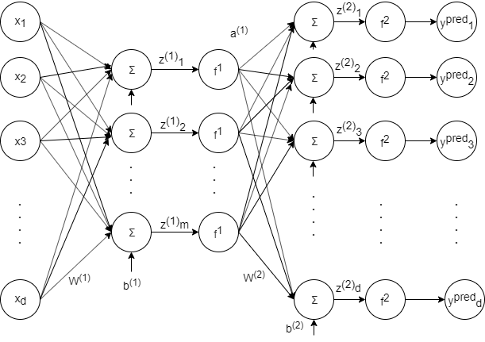
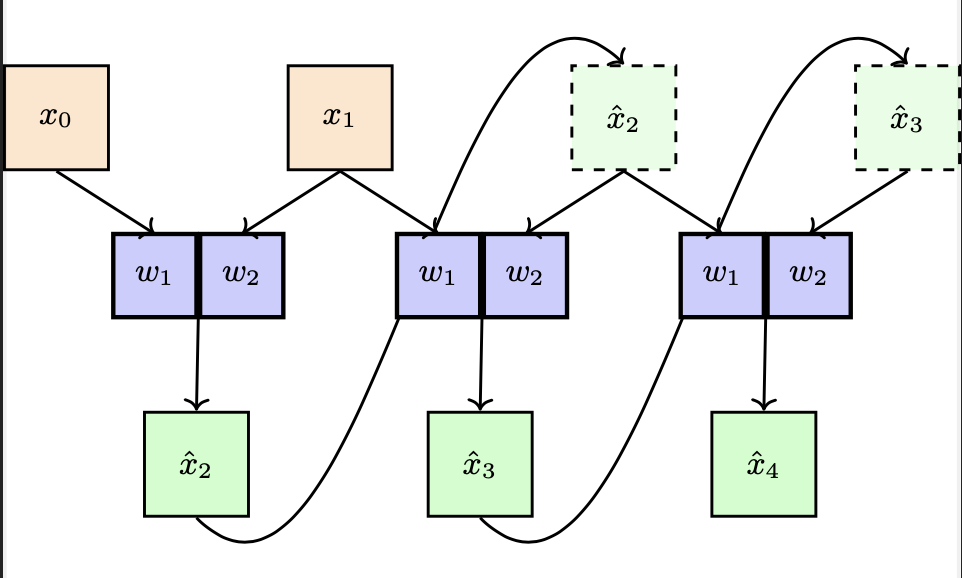

Gen
Problem 1 Autoencoders
A research team is developing an image compression system using autoencoders for medical imaging. Consider the following autoencoder with input \(x \in \mathbb{R}^d\) (a flattened medical image) and output \(y^{pred} \in \mathbb{R}^d\) (the reconstructed image). The goal is to drive the prediction \(y^{pred}\) close to the input features \(x\) by compression and reconstruction while minimizing storage requirements.
The autoencoder has one hidden layer with \(m\) hidden units representing the compressed image: \(z^{(1)}\), \(a^{(1)} \in \mathbb{R}^m\).

Assume \(x,\ z^{(2)},\) and \(y^{pred}\) have dimensions \(d \times 1\). Also let \(z^{(1)}\) and \(a^{(1)}\) have dimensions \(m \times 1\).
a) What is the dimension of \(W^{(1)}\) (the encoder weight matrix that compresses the medical image)?
- d x m
- m x d
- m x 1
- 1 x m
- 1 x d
- d x 1
Answer: m x d.
Explanation: Since the compressed representation \(z^{(1)}\) is m-by-1,
and the flattened medical image \(x\) is d-by-1, the encoder weight matrix \(W^{(1)}\)
needs to be m by d to perform the dimensionality reduction from d pixels to m
compressed features.
b) What is the dimension of \(b^{(1)}\) (the encoder bias)?
- d x m
- m x d
- m x 1
- 1 x m
- 1 x d
- d x 1
Answer: m x 1.
Explanation: Since the compressed representation \(z^{(1)}\) is m-by-1,
the encoder bias \(b^{(1)}\) needs to be m by 1 to match the compressed dimension.
c) What is the dimension of \(W^{(2)}\) (the decoder weight matrix that reconstructs the image)?
- d x m
- m x d
- m x 1
- 1 x m
- 1 x d
- d x 1
Answer: d x m.
Explanation: Since the reconstruction \(z^{(2)}\) is d-by-1 (same size as original image),
and the compressed representation \(a^{(1)}\) is m-by-1, the decoder weight matrix \(W^{(2)}\)
needs to be d by m to expand from m compressed features back to d pixel values.
d) What is the dimension of \(b^{(2)}\) (the decoder bias)?
- d x m
- m x d
- m x 1
- 1 x m
- 1 x d
- d x 1
Answer: d x 1.
Explanation: Since the reconstruction \(z^{(2)}\) is d-by-1 (matching the original
image dimension), the decoder bias \(b^{(2)}\) needs to be d by 1.
Compression Ratio Analysis
The team trains the autoencoder with back-propagation. The loss for a given medical image \(x\) is:
A junior engineer proposes increasing the compression layer size significantly, suggesting \(m = 10d\) hidden units (where \(d\) is the input dimension). The rationale is that "more capacity means better reconstruction." (Recall that \(z^{(1)}\) has dimensions \(m \times 1\).)
a) What would you expect to see with training loss using the high-capacity (\(m = 10d\)) approach?
- increase
- decrease
- about the same
- it depends/not enough information
Answer: decrease.
Explanation: The high-capacity approach effectively increases the
hidden layer dimension, and the number of learnable weights feeding
into the nonlinear activations. By doing so, it increases the
expressive/fitting power of the autoencoder. Training loss will
likely be lower, but this would likely be due to over-fitting and
lead to worse test loss.
b) What would you expect to see with test loss using the high-capacity (\(m = 10d\)) approach?"""
- increase
- decrease
- about the same
- it depends/not enough information
Answer: increase.
Explanation: The high-capacity approach effectively increases the
hidden layer dimension, and the number of learnable weights feeding
into the nonlinear activations. By doing so, it increases the
expressive/fitting power of the autoencoder. Training loss will
likely be lower, but this would likely be due to over-fitting and
lead to worse test loss.
c) What are some likely drawbacks of the high-capacity (\(m = 10d\)) approach?
- leads to overfitting
- takes longer to train
- makes SGD iterations less stable (i.e. parameters "jump" around more)
- large bottleneck defeats the purpose of compression
Answer: All true.
Explanation: The high-capacity model has more non-linear units and
more weights/parameters to be learned. As a result, the model has
more expressive/fitting power, and has more capacity to
overfit. Merely due to the increased number of parameters, the
learning might take longer, and SGD might be less stable
(higher-dimensional space for the parameters to 'bounce
around'). Autoencoders are motivated by the desire to find a
lower-dimensional (latent) representation of the original data (for
some downstream tasks like medical image storage). A large bottleneck
defeats this compression purpose.
Network Depth Analysis
A senior researcher proposes adding network depth for better feature learning. Let \(m\) be much smaller than \(d\). The proposal is to add 10 more hidden layers all with linear activation before the current hidden layer (which has sigmoid activation function \(f^{(1)}\)), where each added hidden layer has \(m\) units.
What would you expect to see with your training and test loss compared to just having one hidden layer with activation \(f^{(1)}\)?
a) What would you expect to see with training loss using the deeper linear network?
- increase
- decrease
- about the same
- it depends/not enough information
Answer: about the same.
Explanation: The intermediate hidden layers do not add
substantial expressivity to the network because they are all just
linear layers (and so equivalent to just a larger single weight
matrix). So we would expect similar training and test loss as
compared to the single \(f^{(1)}\) hidden layer network. This may,
however, require different number of training iterations with the
same available data, in order to achieve similar loss.
b) What would you expect to see with test loss using the deeper linear network?
- increase
- decrease
- about the same
- it depends/not enough information
Answer: about the same.
Explanation: The intermediate hidden layers do not add
substantial expressivity to the network because they are all just
linear layers (and so equivalent to just a larger single weight
matrix). So we would expect similar training and test loss as
compared to the single \(f^{(1)}\) hidden layer network. This may,
however, require different number of training iterations with the
same available data, in order to achieve similar loss.
Problem 2 Autoregressive CNN filters
Consider the following autoregressive model, which uses a \(2\times1\) convolutional filter to compute the next element in a sequence:

A model is autoregressive if it makes each prediction only on past values. In particular, it feeds its own outputs back into the input.
a) Let's say the model is given \(x_0=1, x_1=1, w_1=1, w_2=1\). Predict the next 3 numbers of the sequence, \(\hat{x}_2, \hat{x}_3, \hat{x}_4\).
Explanation:
With these initial integers inputs and weights of 1, our model generates the Fibonacci sequence.
b) Suppose that the inputs remain the same, but the weights are \(w_1 = 2, w_2 = -1\). Now, what are the next 3 numbers of the sequence?
Explanation:
Constant sequence of 1s.
c) Suppose you are given a data set of sequences \(\{x_t^{(i)}\}_{i=1}^n\) and want to learn weights \(w_1, w_2\) such that: \(\hat{x}_t^{(i)} = w_1 x_{t-2}^{(i)} + w_2 x_{t-1}^{(i)}\). What objective function could you minimize to find the best weights?
Explanation:
You treat this as a regression problem. You can minimize the mean squared-error over all sequences: \(\min_{w_1, w_2} \sum_i \sum_{t=2}^{T} \left( x_t^{(i)} - (w_1 x_{t-2}^{(i)} + w_2 x_{t-1}^{(i)}) \right)^2\) This encourages the model to predict each value as close as possible to the actual one, based only on previous values.
Problem 3 Computing Word Similarity
Now let's try quantifying how similar different words are.
To measure similarity between word embeddings, two common metrics are used:
- Dot product: \(\vec{v}_1 \cdot \vec{v}_2\) — captures both directional alignment and magnitude
- Cosine similarity: \(\frac{\vec{v}_1 \cdot \vec{v}_2}{||\vec{v}_1|| \cdot ||\vec{v}_2||}\) — measures only the angle between vectors, ignoring magnitudes
As a quick warmup, let's practice calculating these metrics for low-dimensional vectors by hand.
a) Let \(\vec{v}_1 = [1, 2, 3]\) and \(\vec{v}_2 = [4, 5, 6]\) be two 3D vectors. Enter a list with two values:
- The dot product \(\vec{v}_1 \cdot \vec{v}_2\)
- The cosine similarity between \(\vec{v}_1\) and \(\vec{v}_2\) (rounded to 4 decimal places).
Answer: [32, 0.9746].
Explanation: For the dot product: \(\vec{v}_1 \cdot \vec{v}_2 = 1 \cdot 4 + 2 \cdot 5 + 3 \cdot 6 = 4 + 10 + 18 = 32\).
For cosine similarity:
- \(||\vec{v}_1|| = \sqrt{1^2 + 2^2 + 3^2} = \sqrt{14}\)
- \(||\vec{v}_2|| = \sqrt{4^2 + 5^2 + 6^2} = \sqrt{77}\)
- Cosine similarity \(= \frac{32}{\sqrt{14} \cdot \sqrt{77}} = \frac{32}{\sqrt{1078}} \approx 0.9746\) (rounded to 4 decimal places).
b) Now, let's try to generalize slightly to more high-dimensional vector space (with still contrived examples.) Consider \(\vec{v}_1 = [1, 2, 3, 1, 2, 3, \ldots]\) where the triplet \([1, 2, 3]\) repeats 100 times (so \(\vec{v}_1\) is 300-dimensional), and \(\vec{v}_2 = [4, 5, 6, 4, 5, 6, \ldots]\) where the triplet \([4, 5, 6]\) repeats 100 times (so \(\vec{v}_2\) is 300-dimensional).
What happens to the dot product and cosine similarity compared to the original 3D vectors?
(Hint: You can calculate without actually doing all 300 multiplications—what's the pattern?).
- The dot product increases by a factor of 100, and cosine similarity remains the same.
- The dot product increases by a factor of 100, and cosine similarity increases by a factor of 100.
- The dot product remains the same, and cosine similarity increases by a factor of 100.
- Both the dot product and cosine similarity remain the same.
- The dot product increases by a factor of \(\sqrt{100}\), and cosine similarity increases by a factor of \(\sqrt{100}\).
Answer: The dot product increases by a factor of 100, and cosine similarity remains the same.
Explanation: The dot product is the sum of 100 copies of \((1 \cdot 4 + 2 \cdot 5 + 3 \cdot 6) = 32\), so it's \(100 \times 32 = 3200\), which is 100 times larger. However, the cosine similarity divides by the norms. The norm of \(\vec{v}_1\) is \(\sqrt{100 \times (1^2 + 2^2 + 3^2)} = 10\sqrt{14}\), and similarly for \(\vec{v}_2\). So cosine similarity \(= \frac{3200}{10\sqrt{14} \cdot 10\sqrt{77}} = \frac{32}{\sqrt{1078}}\), exactly the same as before! Of course this invariance is due to the very specific pattern we cooked up in the examples.
As an aside: The dot product depends on both magnitude and direction, while cosine similarity depends only on direction. In practice, they give nearly identical results because embedding norms are usually similar, and with normalized embeddings they are mathematically equivalent. Moreover, in most ML systems, learnable weights or normalization layers make vector scaling largely irrelevant, so cosine similarity only matters when magnitudes vary significantly — which is rare in well-trained models.
Problem 4 The Ethics of Embedding Space
As we've explored embeddings, we should also consider their limitations and ethical implications. Embeddings capture relationships present in their training data—including human biases.
Bias in Embeddings
Word embeddings inherently depend on the context provided during training. This means they can exacerbate human bias, especially in a world where we are increasingly dependent on AI models.
One concrete example found in word vector embeddings: 'woman' clusters closer to 'nurse' while 'man' clusters closer to 'doctor'. This reflects societal biases in the training data rather than any inherent relationship between these words.
Can you think of any ways to detect embedding bias? Can you think of ways to mitigate it?
Explanation: For this example, just changing the training data could help fix this. We can mask/substitute words (like female with male, or pronouns, or any gendered nouns) when we know there are contrasts in population, like female and male dominated fields. By contrast we wouldn't want this to happen with words like waiter/waitress because those should cluster accordingly.
Another idea would be to fix it after embedding. Where we transform the data to keep distances between unbiased words, but adjust the distances of biased words. This is more closely described in the linked paper.
Context-Dependent Bias
Another problem that word embedding models face stems from their context-dependent nature: asking the same question in different ways may produce different outputs.
A Stanford study on equity in AI found that when asked which of two chess players—one with a female name and one with a male name—would win a match, a language model often predicted that the player with the male name would win, reflecting gender bias in the training data.
Based on what we've learned about embeddings:
- How do you think gender biases affect the embedding space of words?
- Do you think it's possible to create representations that are robust to gendered language?
Explanation: You would expect the embedding space to have a region that corresponds to male-oriented language and a region that corresponds to female-oriented language. Maybe it's possible to have a representation that's robust to gender. One option might be to mask gendered language before embedding.
Explainability and Interpretability
In 2016, the European Union published the General Data Protection Regulation (GDPR), which governs many facets of data usage, storage, privacy, and security relating to the personal data of EU residents. One focus of the GDPR is the "right to explanation"—the right to be given an explanation for the output of an automated process (which may be an algorithm or model) that makes decisions about you or is based on your personal data.
Learned representations of your personal information—such as your individual social media posts—can be used by organizations for various purposes, such as creating personalized advertisements.
Do you think that representation learning creates representations or embeddings that are sufficiently explainable? Are you satisfied by the amount of interpretability available in the embeddings we've seen so far, or how might you work toward making them more interpretable?
Below is an example of how the research community thinks about this (attention is the key mechanism that enables transformers to learn representations; we will look more closely at transformers and attention next week):
*For more information, here is a 2020 study from the European Parliament Research Service on the The impact of the General Data Protection Regulation (GDPR) on artificial intelligence641530_EN.pdf).
Explanation: This is a very open ended question. Both yes and no answers are accepted. One potential discussion topic could be that we currently have models 'explaining' themselves, which is moving the right direction, but similar to how humans can make up explanations, there is no guarantee that this holds any weight.